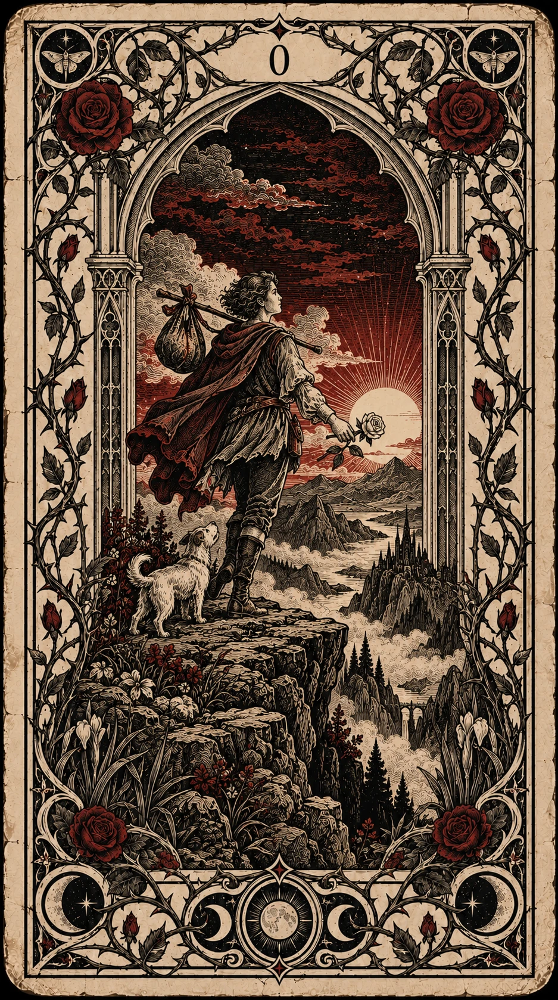
The Fool
ผู้เริ่มเดินทาง
major-00ตั้งตรง: ถึงเวลาเริ่มสิ่งใหม่ด้วยใจที่เบาและอยากรู้อยากเห็น คุณยังไม่ต้องรู้ปลายทางทั้งหมด แค่ก้าวแรกก็เพียงพอแล้ว
กลับหัว: ตอนนี้อาจกำลังรีบพุ่งไปข้างหน้าโดยยังไม่ได้เตรียมตัว ลองหยุดถามตัวเองว่านี่คือความกล้า หรือแค่อยากหนีความลังเล
ก้าวไปทีละนิด และเช็กความเสี่ยงสักรอบก่อนตัดสินใจกระโดด
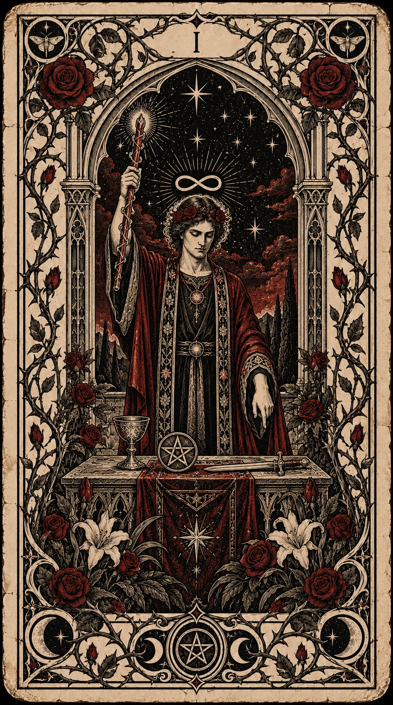
The Magician
ผู้ใช้ศักยภาพ
major-01ตั้งตรง: สิ่งที่ต้องใช้อยู่ตรงหน้าคุณครบแล้ว ทั้งทักษะ เครื่องมือ และความตั้งใจ เหลือแค่ลงมือเอามาประกอบให้เป็นของจริง
กลับหัว: พลังและฝีมือมีอยู่ แต่กระจายไปหลายทางจนไม่เกิดผล หรืออาจกำลังใช้ฝีมือเพื่อเอาตัวรอดมากกว่าสร้างสิ่งที่ตั้งใจ ลองเลือกเรื่องสำคัญเรื่องเดียวแล้วโฟกัส
ของที่ต้องใช้มีอยู่ในมือแล้ว เลือกอย่างที่ถนัดที่สุดแล้วเริ่มเลย
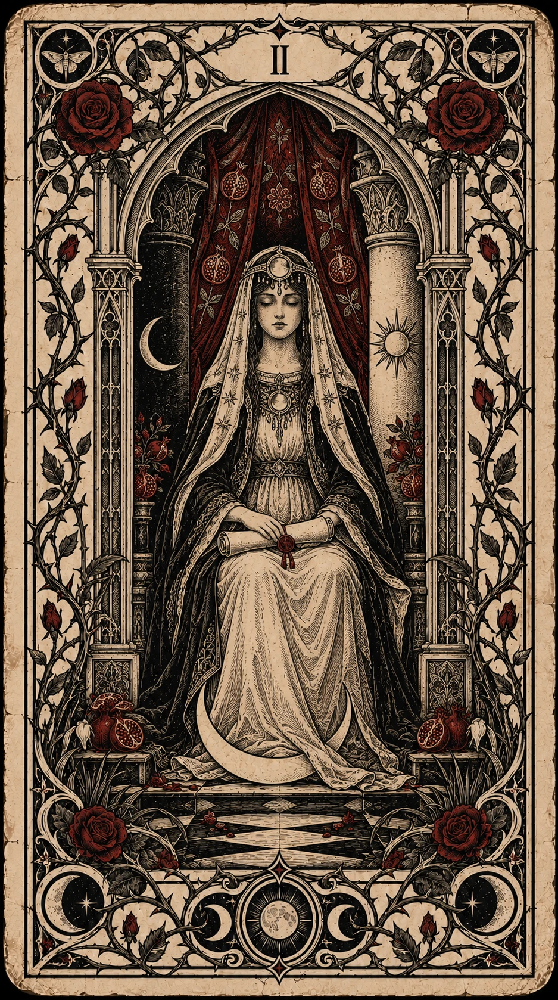
The High Priestess
ผู้รักษาความลับ
major-02ตั้งตรง: คำตอบยังไม่ชัด และเสียงที่ช่วยคุณได้มากที่สุดตอนนี้คือสัญชาตญาณของตัวเอง ลองนิ่งให้พอจะได้ยินมัน บางเรื่องยังไม่ถึงเวลาเปิดเผย จึงไม่ต้องรีบรู้
กลับหัว: อาจกำลังมองข้ามความรู้สึกเล็ก ๆ ในใจ หรือตัดสินใจทั้งที่ข้อมูลยังไม่พอ ลองถอยมาฟังตัวเองอีกครั้ง และหาข้อเท็จจริงเพิ่ม
ใจเย็นไว้ แล้วรอให้ข้อมูลที่ยังขาดค่อย ๆ ชัดขึ้นเอง
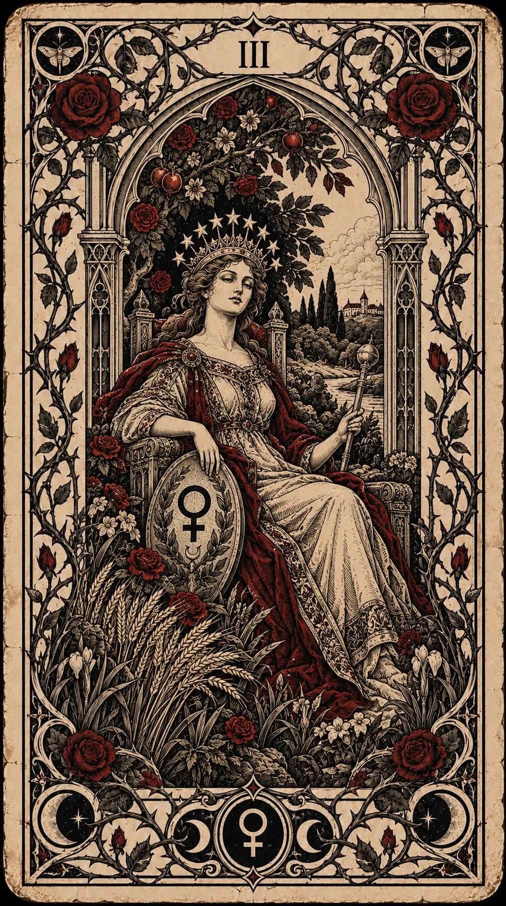
The Empress
ผู้หล่อเลี้ยง
major-03ตั้งตรง: เป็นช่วงของการดูแลและการเติบโต เหมือนสวนที่ได้น้ำและแสงกำลังพอดี งานสร้างสรรค์ ร่างกาย และความสัมพันธ์ ล้วนต้องการความอ่อนโยน
กลับหัว: อาจให้คนอื่นมากจนลืมดูแลตัวเอง หรือความห่วงใยเริ่มล้ำเกินขอบเขตของอีกฝ่าย ลองกลับมาเติมใจตัวเองก่อน
ดูแลร่างกายและสิ่งที่กำลังเติบโตในชีวิตให้เพียงพอ
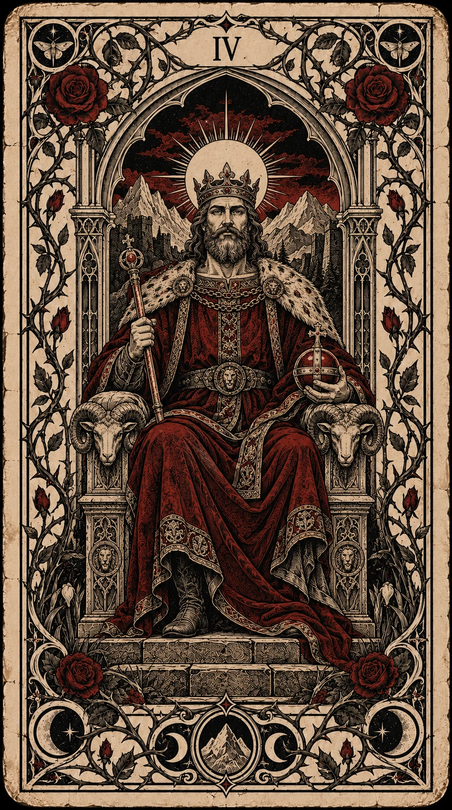
The Emperor
ผู้วางรากฐาน
major-04ตั้งตรง: โครงสร้างที่ชัดเจนคือพื้นที่ยืนที่มั่นคง กติกา ความรับผิดชอบ และการตัดสินใจที่หนักแน่นช่วยให้สิ่งที่สร้างอยู่ได้นาน
กลับหัว: ความเข้มงวดอาจกลายเป็นการควบคุม หรือในทางกลับกัน ทุกอย่างหลวมจนขาดหลัก ลองหาระดับที่แน่นพอแต่ไม่แข็งเกินไป
ตั้งกติกาให้ชัด แต่เผื่อที่ให้ยืดหยุ่นได้บ้าง
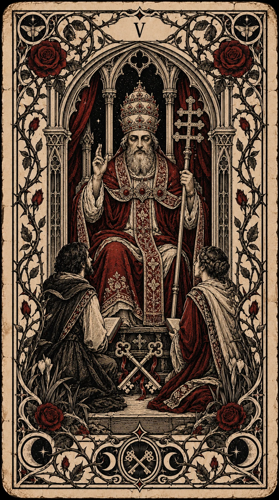
The Hierophant
ผู้ถ่ายทอด
major-05ตั้งตรง: ภูมิปัญญาที่สืบทอดกันมา ครูที่ไว้ใจได้ และข้อตกลงที่คนส่วนใหญ่เคารพ ช่วยให้คุณเดินต่อได้อย่างมีหลัก
กลับหัว: อาจถึงเวลาตั้งคำถามกับกฎที่ไม่เหมาะกับคุณแล้ว หรือในทางกลับกัน คุณอาจทำตามมาตลอดโดยไม่เคยถามตัวเองว่าเห็นด้วยจริงหรือเปล่า
ลองแยกดูว่ากฎข้อไหนยังช่วยคุณอยู่ และข้อไหนแค่ทำตามกันมา
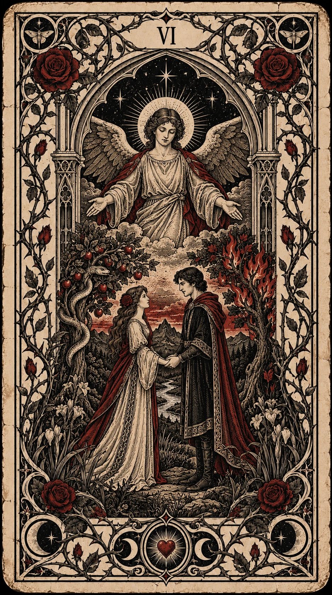
The Lovers
ผู้เลือกผูกพัน
major-06ตั้งตรง: นี่คือการเลือกที่มาจากความตรงกันของคุณค่า ไม่ใช่แค่ความรู้สึกวูบวาบ เป็นการยอมรับทั้งตัวเองและอีกฝ่ายอย่างซื่อสัตย์
กลับหัว: คุณค่าของสองฝ่ายอาจไม่ตรงกัน หรือคุณกำลังเลี่ยงที่จะเลือกให้ชัด ลองกลับมาถามตัวเองว่าต้องการอะไรจริง ๆ
ก่อนเลือก ลองเช็กว่าตัวเลือกนั้นตรงกับสิ่งที่คุณให้คุณค่าจริงหรือเปล่า
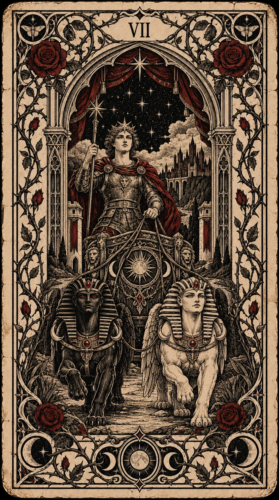
The Chariot
ผู้กำหนดทิศ
major-07ตั้งตรง: แรงสองทางที่เคยดึงกันถูกรวมให้ไปทางเดียวกันด้วยความตั้งใจ ช่วงนี้ความมุ่งมั่นและวินัยพาคุณไปข้างหน้าได้จริง
กลับหัว: แรงต่าง ๆ ในชีวิตกำลังดึงไปคนละทาง คุณอาจรู้สึกว่าคุมอะไรไม่อยู่ ลองหยุดตั้งหลักและกำหนดทิศทางก่อนเร่งเครื่องต่อ
กำหนดทิศทางให้ชัด แล้วจัดสิ่งที่ดึงคุณอยู่ให้ไปทางเดียวกัน
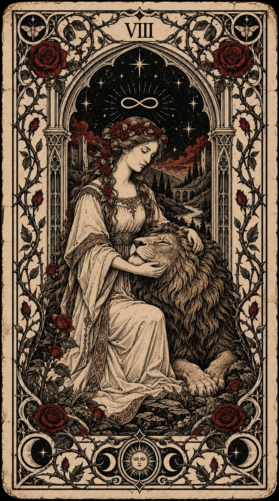
Strength
พลังอ่อนโยน
major-08ตั้งตรง: ความเข้มแข็งที่แท้ไม่ได้ดังกึกก้อง แต่คือความอดทนที่อ่อนโยน เหมือนมือที่ลูบสิงโตจนสงบ ลองรับมืออารมณ์ด้วยใจที่นิ่ง
กลับหัว: อาจรู้สึกไม่มั่นใจในตัวเอง ฝืนกดอารมณ์ไว้ หรือพยายามเอาชนะด้วยการบังคับ ลองกลับมาเมตตาตัวเองก่อน
รับมือด้วยความใจเย็น แทนการบังคับให้ได้ดั่งใจ
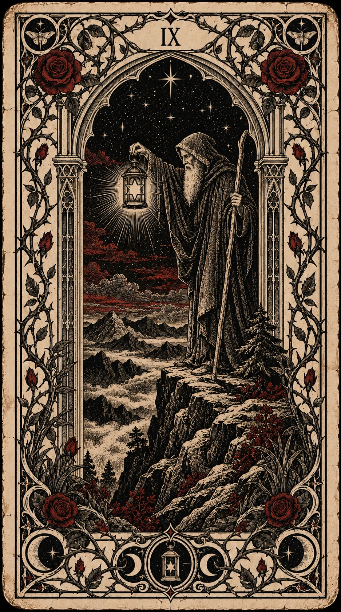
The Hermit
ผู้ค้นภายใน
major-09ตั้งตรง: ถือตะเกียงเล็ก ๆ แล้วเดินคนเดียวเพื่อให้เห็นทางของตัวเอง ช่วงนี้การถอยออกมาเงียบ ๆ ให้ปัญญามากกว่าการอยู่ท่ามกลางเสียงรอบตัว
กลับหัว: การอยู่คนเดียวอาจเลยจากการพักกลายเป็นการตัดขาดจากคนอื่น หรือคุณอาจกำลังไม่ฟังคำแนะนำที่หวังดี
หาเวลาเงียบ ๆ สักพัก แล้วทางที่ควรไปจะชัดขึ้นเอง
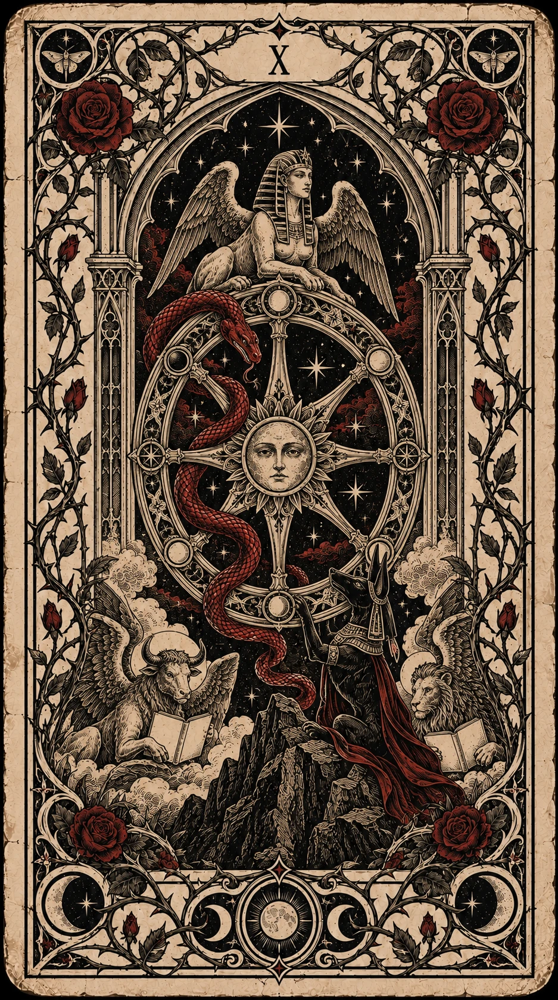
Wheel of Fortune
วงล้อแห่งการเปลี่ยน
major-10ตั้งตรง: วงล้อกำลังหมุน บางช่วงขึ้น บางช่วงลง มีหลายอย่างที่คุณควบคุมไม่ได้ สิ่งที่เลือกได้คือท่าทีที่จะรับมือกับมัน
กลับหัว: คุณอาจรู้สึกว่าวนอยู่กับเรื่องเดิม หรือกำลังต้านการเปลี่ยนแปลงที่กำลังมา ลองมองหาเรื่องที่เกิดซ้ำ แล้วเลือกตอบสนองให้ต่างออกไป
แยกให้ออกว่าอะไรที่คุณคุมได้ และอะไรที่ต้องปล่อยให้เป็นไปตามจังหวะ
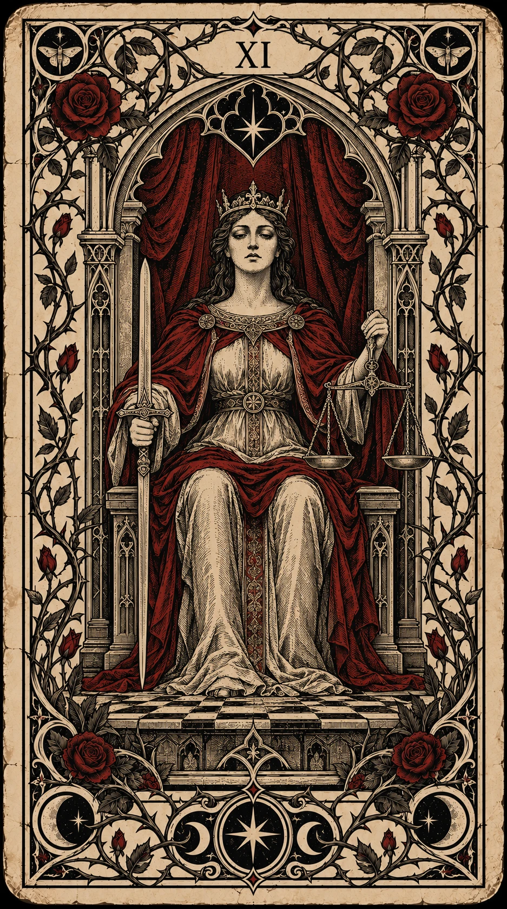
Justice
ดุลยธรรม
major-11ตั้งตรง: ชั่งน้ำหนักด้วยข้อเท็จจริง ไม่ใช่ด้วยความรู้สึกของฝ่ายใดฝ่ายหนึ่ง ทุกการกระทำมีผลตามมา และความเป็นธรรมเริ่มจากการซื่อตรงกับตัวเอง
กลับหัว: อาจมีอคติเข้ามาปน หรือคุณกำลังเลี่ยงรับผิดชอบส่วนของตัวเอง ลองกลับไปดูหลักฐานให้ครบทุกด้าน
ตัดสินจากหลักฐาน และยอมรับส่วนที่เป็นความรับผิดชอบของตัวเอง
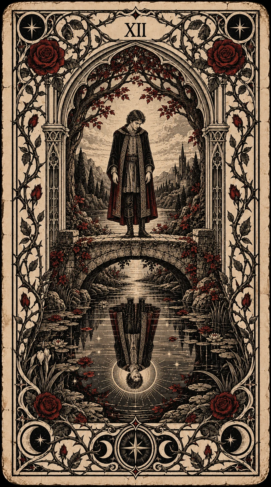
The Hanged Man
ผู้เปลี่ยนมุมมอง
major-12ตั้งตรง: ช่วงนี้ควรหยุดนิ่งเพื่อมองเรื่องเดิมจากมุมใหม่ บางเรื่องแก้ไม่ได้ด้วยการเร่งแรง แต่เปลี่ยนได้เมื่อรู้จักปล่อยและมองต่างออกไป
กลับหัว: คุณอาจรู้สึกค้างคาและรออย่างไม่มีกำหนด หรือเสียสละจนลืมตัวเอง ถึงเวลาถามว่าการรอแบบนี้ยังมีความหมายอยู่ไหม
เปลี่ยนมุมมองก่อนจะออกแรงเพิ่ม
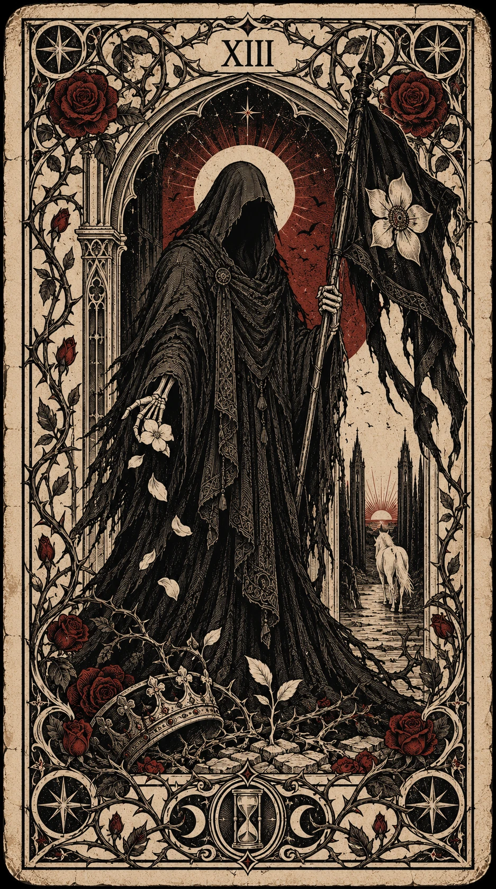
Death
การสิ้นสุดและเปลี่ยนผ่าน
major-13ตั้งตรง: บทหนึ่งกำลังจบลงเพื่อให้บทใหม่เริ่มได้ ไพ่ใบนี้ไม่ได้หมายถึงความตายตามตัวอักษร แต่หมายถึงการปล่อยสิ่งที่หมดหน้าที่ไปแล้ว
กลับหัว: คุณอาจกำลังยื้อสิ่งที่ควรจบ หรือกลัวการเปลี่ยนแปลงจนไม่ยอมขยับ การเปลี่ยนแปลงยังรออยู่ และจะง่ายขึ้นเมื่อคุณยอมรับมัน
ลองเขียนว่าสิ่งไหนควรปล่อยไป เพื่อให้ช่วงใหม่เริ่มได้
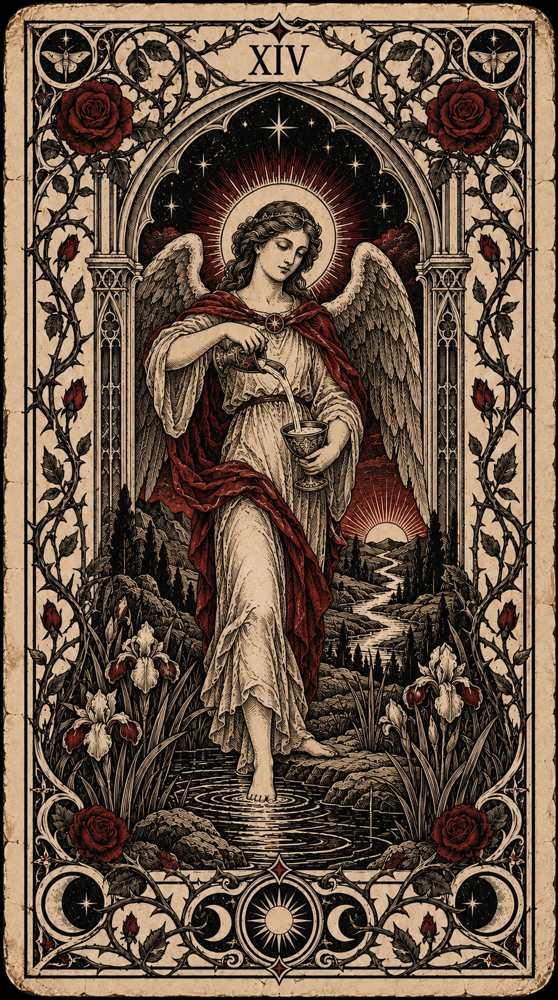
Temperance
ผู้ประสานสมดุล
major-14ตั้งตรง: ค่อย ๆ ผสมสองสิ่งเข้าด้วยกันให้พอดี ไม่เร่งและไม่ช้า ช่วงนี้คือการปรับจังหวะและหาจุดกลางที่ให้สิ่งที่ต่างกันอยู่ร่วมกันได้
กลับหัว: อาจกำลังเอียงสุดไปด้านใดด้านหนึ่ง หรือเร่งจนไม่ลงตัว ลองลดปริมาณลงแล้วปรับทีละนิด
ปรับทีละนิดดีกว่าไปสุดทางด้านใดด้านหนึ่ง
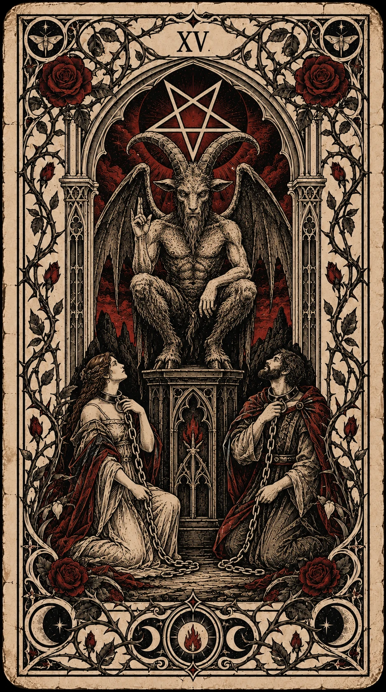
The Devil
พันธนาการ
major-15ตั้งตรง: สิ่งที่ผูกคุณไว้อาจเป็นความอยาก ความกลัว หรือความเคยชิน โซ่ในภาพหลวมพอจะถอดออกได้ ถ้าคุณยอมรับว่ามันมีอยู่
กลับหัว: คุณเริ่มเห็นสิ่งที่เคยผูกตัวเองไว้โดยไม่รู้ตัว และมันกำลังคลายลง ขั้นแรกของการเป็นอิสระมักเริ่มจากการยอมรับตรง ๆ
ลองดูว่าข้อผูกมัดข้อไหนที่จริง ๆ แล้วคลายออกได้
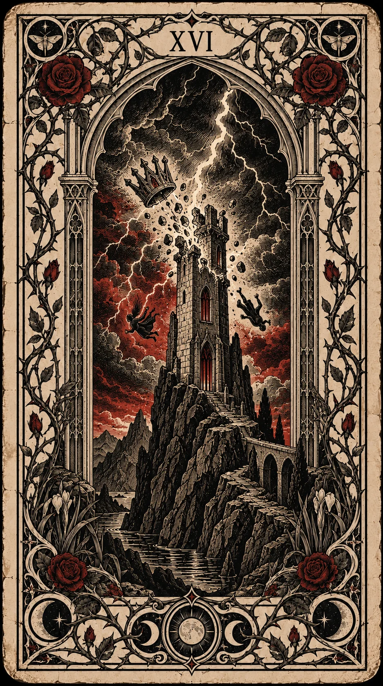
The Tower
หอคอยแตกสลาย
major-16ตั้งตรง: สิ่งที่สร้างบนฐานที่ไม่มั่นคงกำลังถูกเขย่าจนต้องเผชิญความจริง แม้จะเจ็บ แต่ก็เปิดโอกาสให้สร้างใหม่ให้แข็งแรงกว่าเดิม
กลับหัว: คุณอาจกลัวความจริงจนพยายามยื้อสิ่งที่กำลังร้าว หรือกำลังเก็บกวาดหลังเหตุการณ์ผ่านไป ค่อย ๆ เลือกเก็บสิ่งที่ยังใช้ได้
จัดการเรื่องตรงหน้าให้ผ่านไปก่อน แล้วค่อยสร้างฐานใหม่
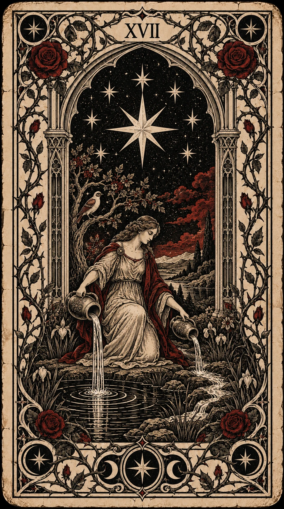
The Star
แสงแห่งความหวัง
major-17ตั้งตรง: หลังพายุผ่านไป มีแสงเบา ๆ ให้ค่อย ๆ ฟื้นใจ นี่คือช่วงของการเยียวยา ความหวัง และความไว้วางใจที่กลับมาทีละนิด
กลับหัว: คุณอาจเหนื่อยจนมองไม่เห็นว่าความหวังมีค่า ลองเริ่มจากการดูแลตัวเองเรื่องเล็ก ๆ ก่อนจะมองไปไกล
เลือกดูแลตัวเองอย่างเล็ก ๆ สักอย่างที่ทำได้วันนี้
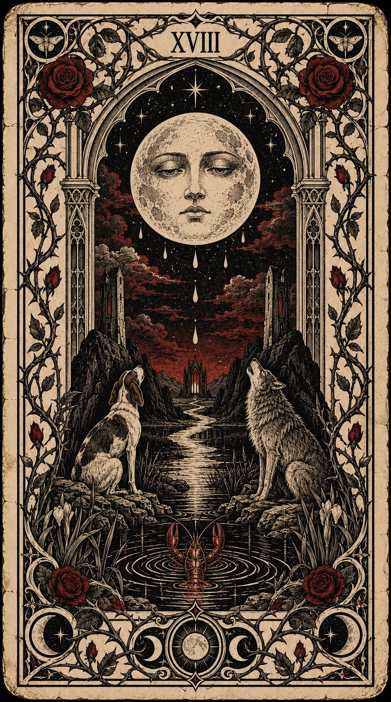
The Moon
ดวงจันทร์
major-18ตั้งตรง: ทุกอย่างดูเลือนราง จริงกับเงาปนกัน ความกลัวและความฝันอาจดูใหญ่กว่าความจริง ค่อย ๆ เดินไป และอย่าเพิ่งสรุป
กลับหัว: หมอกเริ่มจางลงและความจริงบางส่วนเริ่มชัด แม้ในใจยังสับสนอยู่บ้าง ตรวจสิ่งที่ยืนยันได้ และอย่าสรุปจากความกังวล
แยกให้ออกว่าอะไรที่คุณรู้แน่ และอะไรที่แค่กังวลไปเอง
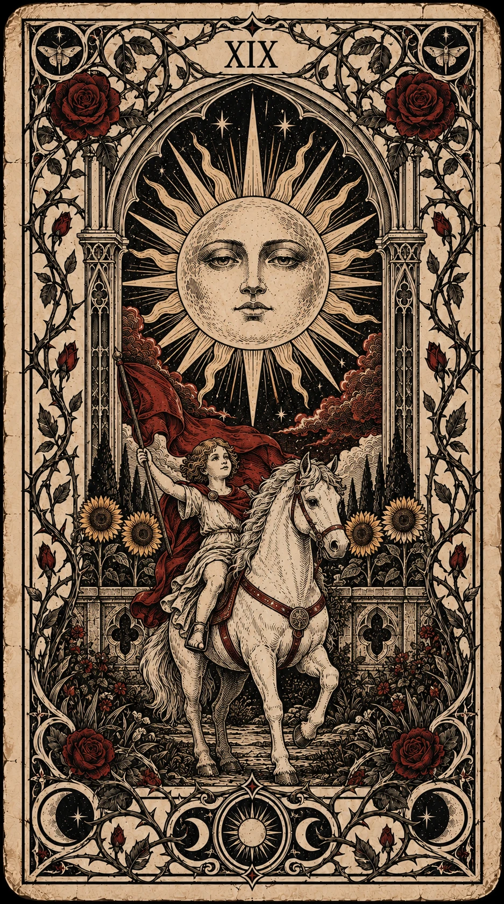
The Sun
แสงแห่งความชัด
major-19ตั้งตรง: แสงสว่างเต็มที่ ทุกอย่างมองเห็นชัด เป็นช่วงของความสุขแบบเรียบง่าย พลังชีวิต และความมั่นใจที่แบ่งปันให้คนรอบข้างได้
กลับหัว: ความสุขอาจถูกบดบังชั่วคราว หรือคุณคาดหวังให้ทุกอย่างสว่างเกินจริง ลองชื่นชมแสงเท่าที่มีอยู่ ซึ่งก็ดีพอแล้ว
ทำสิ่งที่ทำให้คุณรู้สึกมีชีวิตชีวา
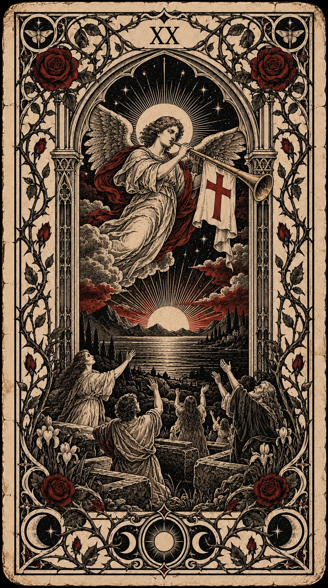
Judgement
เสียงเรียกให้ตื่น
major-20ตั้งตรง: เสียงจากข้างในกำลังเรียกให้คุณทบทวนทางที่ผ่านมาด้วยความเข้าใจ แล้วเลือกใหม่ในแบบที่เป็นตัวเองมากขึ้น
กลับหัว: คุณอาจกำลังตำหนิตัวเองหนักเกินไป หรือไม่ยอมฟังสิ่งที่ต้องเปลี่ยน ลองมองอดีตด้วยความเมตตาแทนการตัดสิน
เอาบทเรียนมาใช้ แต่อย่าลงโทษตัวเองซ้ำ
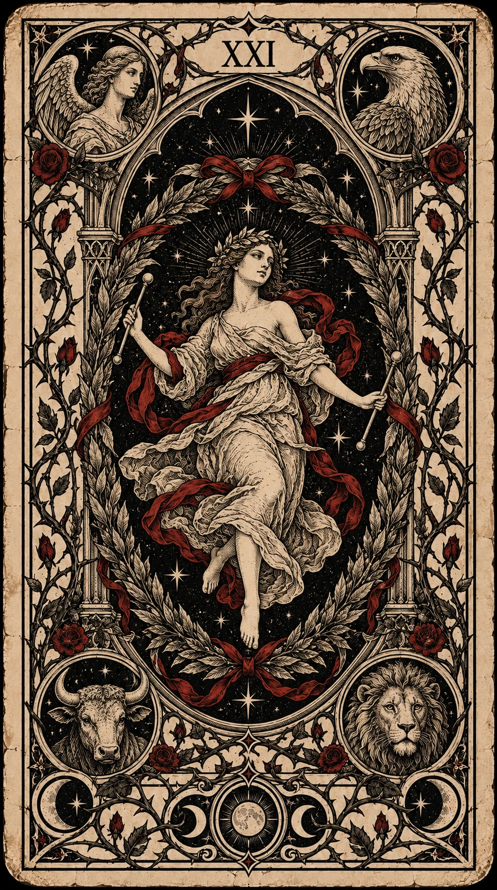
The World
ความครบถ้วน
major-21ตั้งตรง: วงจรหนึ่งปิดลงอย่างสมบูรณ์ สิ่งที่สะสมมาประกอบกันเป็นภาพเต็ม ถึงเวลาภูมิใจกับที่มาถึง และพร้อมก้าวสู่บทต่อไป
กลับหัว: ยังมีบางอย่างค้างอยู่ หรือปิดบทได้ไม่สนิท ลองเก็บงานที่ติดอยู่ให้เรียบร้อยก่อนเดินต่อ
ปิดงานที่ค้างอยู่ให้เรียบร้อย แล้วฉลองให้ตัวเองสักหน่อย
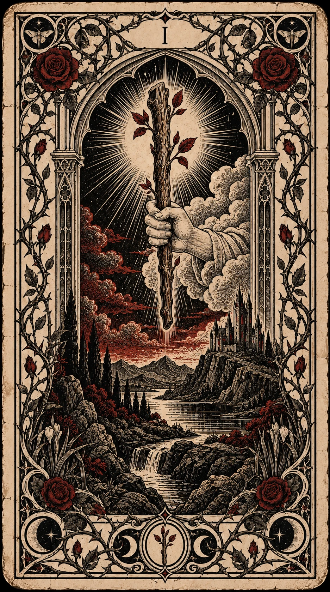
Ace of Wands
หนึ่งไม้เท้า
wands-aceตั้งตรง: ประกายไฟแรกเพิ่งลุกขึ้น เป็นพลังของไอเดียและแรงบันดาลใจที่ยังบริสุทธิ์ ยิ่งลงมือเร็ว ไฟนี้ยิ่งติดต่อได้ง่าย
กลับหัว: ไฟอาจมอดหรือจุดไม่ติด ลองดูว่าขาดแรงใจ ขาดทิศทาง หรือแค่ยังไม่พร้อมจะเริ่ม
ลองลงมือทำอะไรสักอย่างตอนนี้เลย แม้จะเล็กก็ตาม
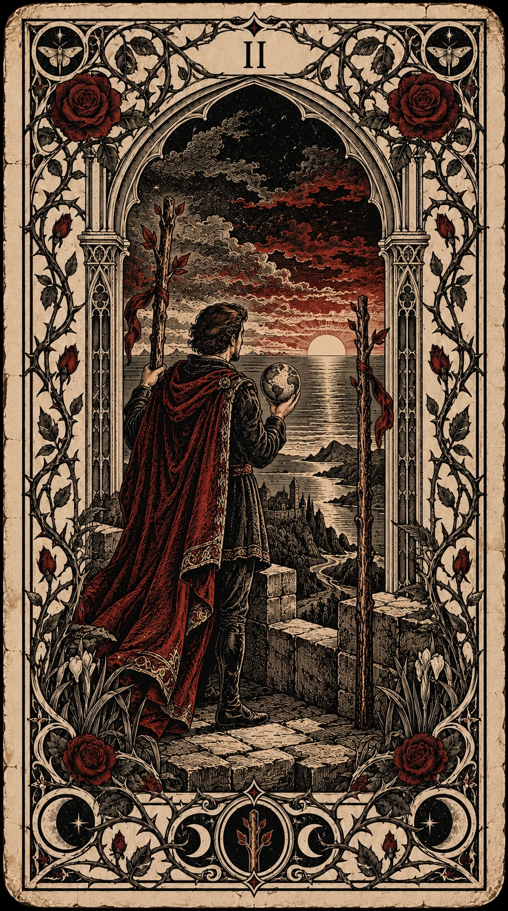
Two of Wands
สองไม้เท้า
wands-twoตั้งตรง: คุณถือทางเลือกไว้ในมือหลายทางและกำลังวางแผนก่อนจะก้าวออกจากพื้นที่ที่คุ้นเคย ถึงเวลาเลือกทิศที่จะไปแล้ว
กลับหัว: คุณอาจลังเลเพราะกลัวออกจากที่เดิม หรือมีแผนแล้วแต่ไม่ขยับ ลองเลือกทิศหนึ่ง แล้วทดสอบด้วยก้าวเล็ก ๆ
เอาแต่ละทางเลือกมาวางเทียบกับเป้าหมายที่คุณอยากไปให้ถึง
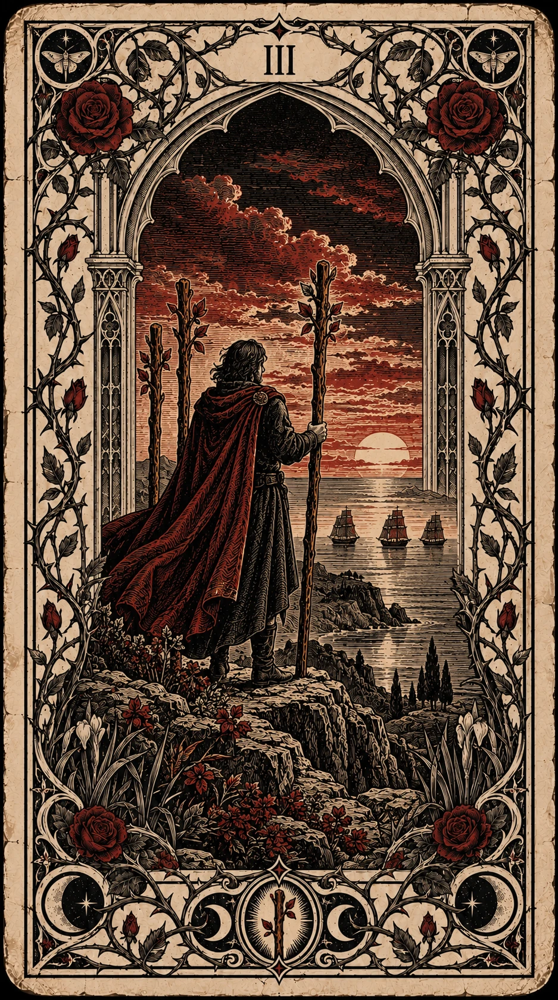
Three of Wands
สามไม้เท้า
wands-threeตั้งตรง: สิ่งที่คุณลงมือไว้กำลังเดินทางไปไกล เป็นช่วงของการขยายขอบเขตและรอผลด้วยความมั่นใจ
กลับหัว: ผลที่รออาจมาช้ากว่าที่คิด หรือคุณมองไกลเกินกว่าฐานที่มี ลองตรวจดูว่าสิ่งที่ส่งออกไปพร้อมจริงหรือยัง
เช็กว่าพร้อมจริงหรือยัง ก่อนจะขยายออกไปไกลกว่านี้
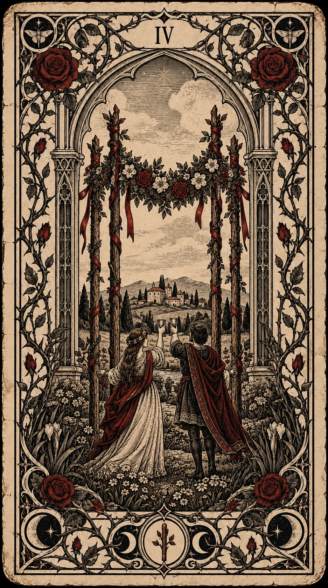
Four of Wands
สี่ไม้เท้า
wands-fourตั้งตรง: ถึงช่วงที่ควรหยุดฉลองสิ่งที่สร้างร่วมกันมา เป็นความอบอุ่นของบ้านและคนใกล้ชิด ที่ผ่านก้าวสำคัญมาด้วยกัน
กลับหัว: บรรยากาศอาจยังไม่ลงตัว หรืออยากได้การยอมรับที่ยังไม่มา ลองสร้างความอบอุ่นให้ที่ตรงนั้นก่อน
หยุดมองสิ่งที่คุณกับคนรอบตัวช่วยกันสร้างมา แล้วขอบคุณกันสักหน่อย
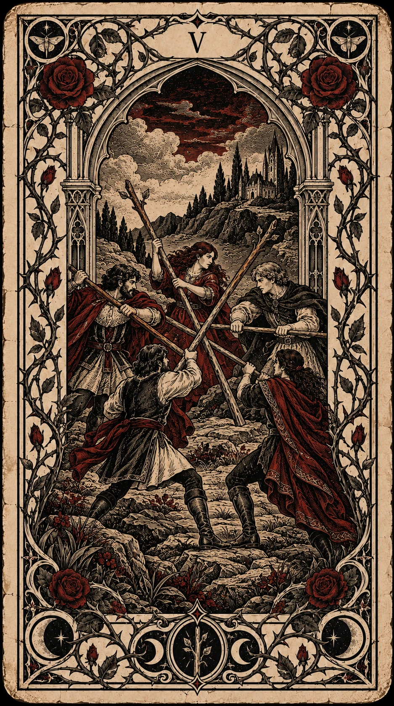
Five of Wands
ห้าไม้เท้า
wands-fiveตั้งตรง: หลายแรงปะทะกันอย่างวุ่นวาย เป็นช่วงของการแข่งขันและความเห็นที่ไม่ตรงกัน ซึ่งเป็นพลังสร้างสรรค์ได้ ถ้าจัดการดี
กลับหัว: คุณอาจกำลังเลี่ยงความขัดแย้งที่ควรเคลียร์ หรือแข่งจนเหนื่อยโดยไม่รู้ว่ากำลังชนะอะไร
ตกลงกติกาการคุยกันก่อน แล้วค่อยเถียงกัน
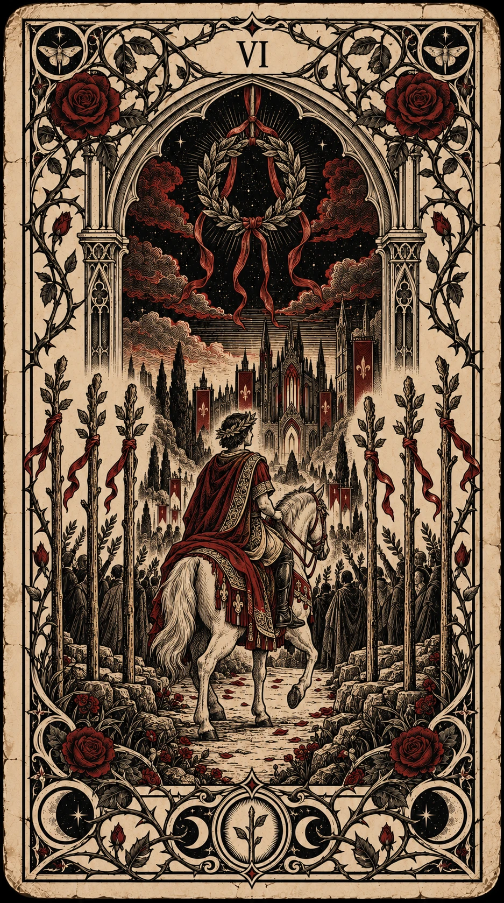
Six of Wands
หกไม้เท้า
wands-sixตั้งตรง: ความพยายามของคุณได้รับการยอมรับ นี่คือช่วงของชัยชนะ ที่ควรรับไว้อย่างภูมิใจและสุภาพ
กลับหัว: คุณอาจอยากได้คำชมมากเกินไป หรือกลัวเสียหน้าจนไม่ยอมรับความผิดพลาด ความสำเร็จที่ยั่งยืนไม่ต้องพึ่งเสียงปรบมือ
รับคำชมได้เต็มที่ และอย่าลืมให้เครดิตคนที่ช่วยคุณมา
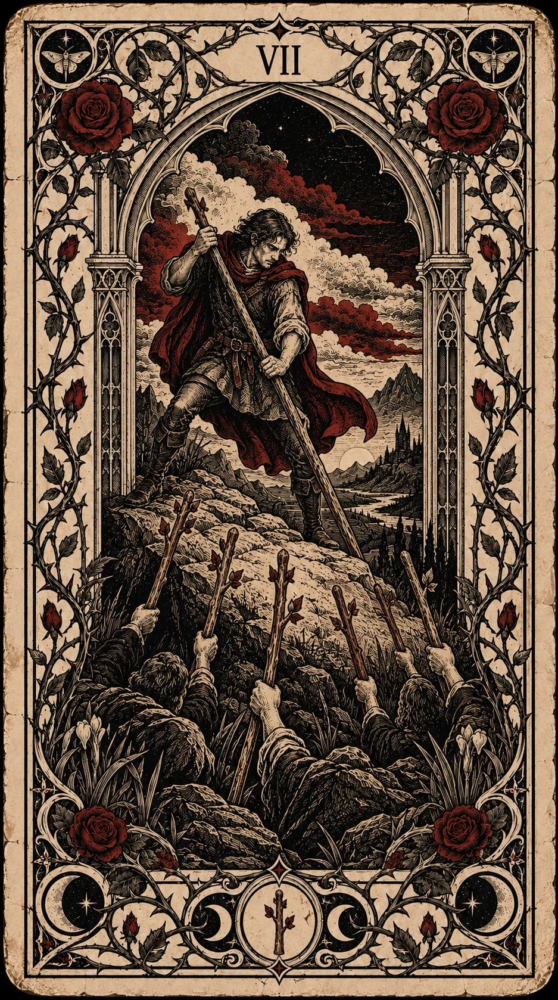
Seven of Wands
เจ็ดไม้เท้า
wands-sevenตั้งตรง: คุณกำลังยืนปกป้องจุดยืนของตัวเองท่ามกลางแรงต้าน ด้วยความมั่นใจว่าสิ่งที่ยึดไว้มีค่า
กลับหัว: คุณอาจเหนื่อยกับแรงต้าน หรือตั้งรับทุกเรื่องมากเกินจำเป็น ลองเลือกว่าเรื่องไหนควรสู้ และเรื่องไหนปล่อยได้
เลือกก่อนว่าเรื่องไหนคุ้มที่จะปกป้อง แล้วปล่อยเรื่องที่เหลือไป
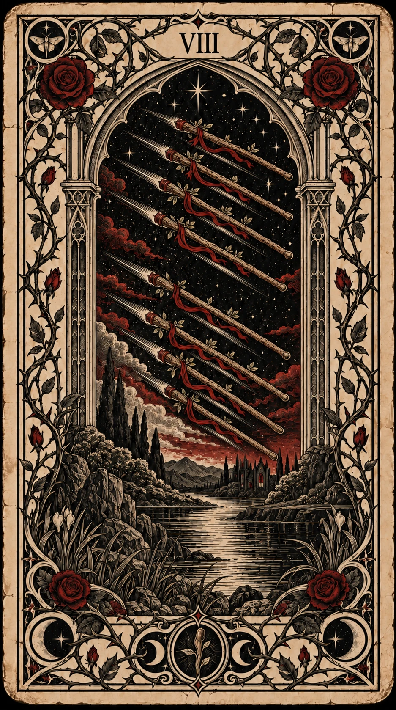
Eight of Wands
แปดไม้เท้า
wands-eightตั้งตรง: ทุกอย่างกำลังเคลื่อนเร็ว มีข่าวสารเข้ามา และเรื่องต่าง ๆ ตัดสินใจเดินหน้าอย่างรวดเร็ว จังหวะนี้ไม่ควรรั้งไว้
กลับหัว: อาจมีความล่าช้าหรือการสื่อสารสับสน ของที่ควรมาถึงยังไม่ถึง ตรวจดูว่าข้อความและแผนตรงกันหรือไม่
จัดลำดับก่อนว่าอะไรด่วนจริง แล้วค่อยตอบทีละเรื่อง
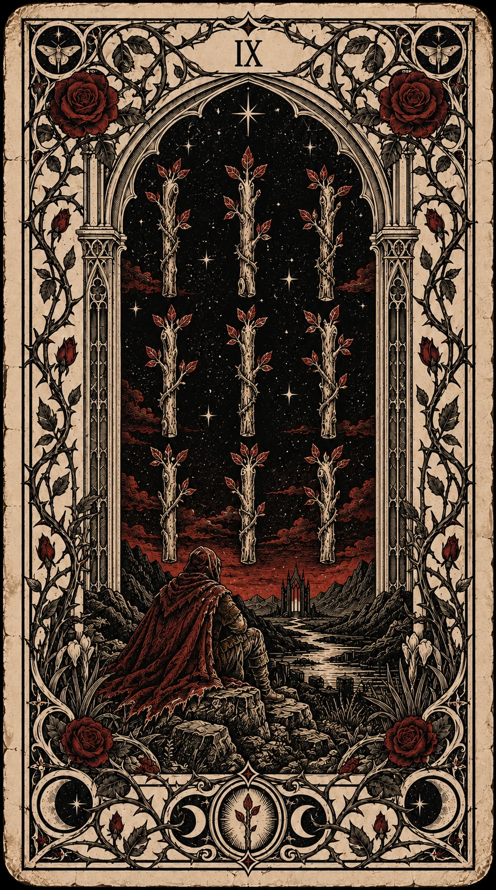
Nine of Wands
เก้าไม้เท้า
wands-nineตั้งตรง: คุณผ่านศึกมาแล้วแต่ยังต้องเฝ้าระวังอยู่ ความอดทนที่สะสมจากประสบการณ์พามาถึงตรงนี้ และเหลืออีกนิดเดียวก่อนจบ
กลับหัว: ความระแวงและความเหนื่อยอาจทำให้คุณฝืนเกินกำลัง ถึงเวลาถามว่าการเฝ้าระวังแบบนี้ยังจำเป็นอยู่ไหม
พักก่อน แล้วค่อยดูว่าตัวเองไหวแค่ไหน
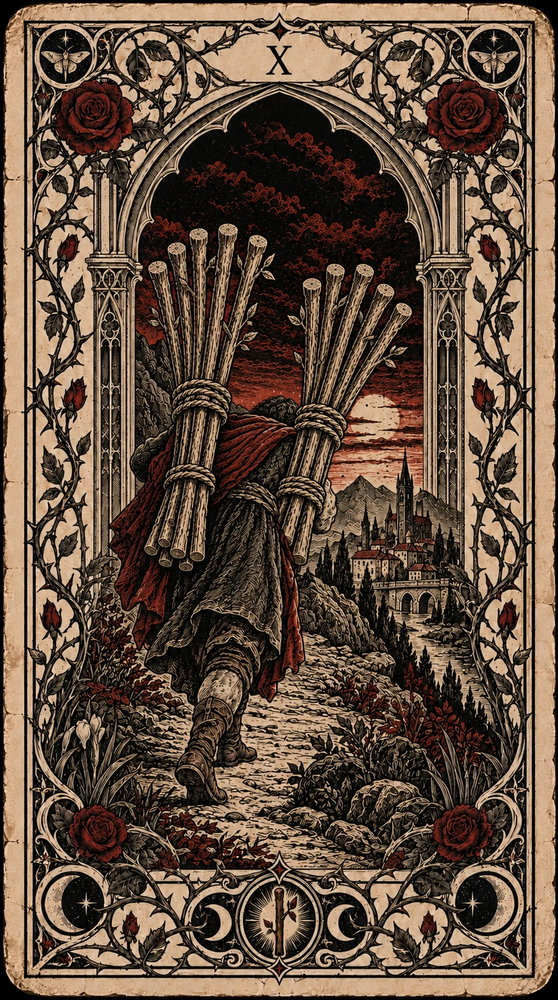
Ten of Wands
สิบไม้เท้า
wands-tenตั้งตรง: คุณแบกภาระมากเกินไปจนหลังโก่ง ปลายทางอยู่ไม่ไกล แต่ทางนั้นหนักมาก ถึงเวลานับว่าอะไรเป็นหน้าที่ของคุณจริง ๆ
กลับหัว: คุณอาจเริ่มวางภาระลงได้ หรือในทางกลับกัน กำลังปัดความรับผิดชอบที่ควรถือ ลองแยกว่าของชิ้นไหนเป็นของใคร
คืนงานหรือภาระที่ไม่ใช่หน้าที่ของคุณให้เจ้าของเดิม
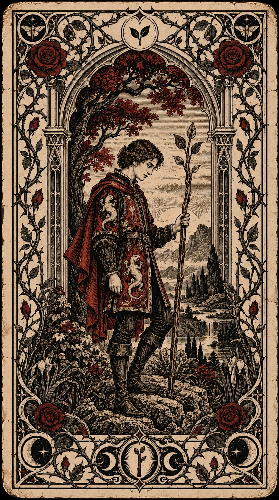
Page of Wands
มหาดเล็กไม้เท้า
wands-pageตั้งตรง: ความอยากรู้อยากเห็นและข่าวเริ่มต้นที่ชวนตื่นเต้น นี่คือพลังของมือใหม่ที่ไม่ต้องเก่งก่อนก็เริ่มได้
กลับหัว: คุณอาจตื่นเต้นกับไอเดียแต่ยังไม่ลงมือ หรือกลัวทำพลาดจนไม่เริ่ม ลองทำเรื่องเล็ก ๆ ที่ไม่มีใครมาตัดสิน
ลองทำก่อนได้ ไม่ต้องรอให้เก่ง
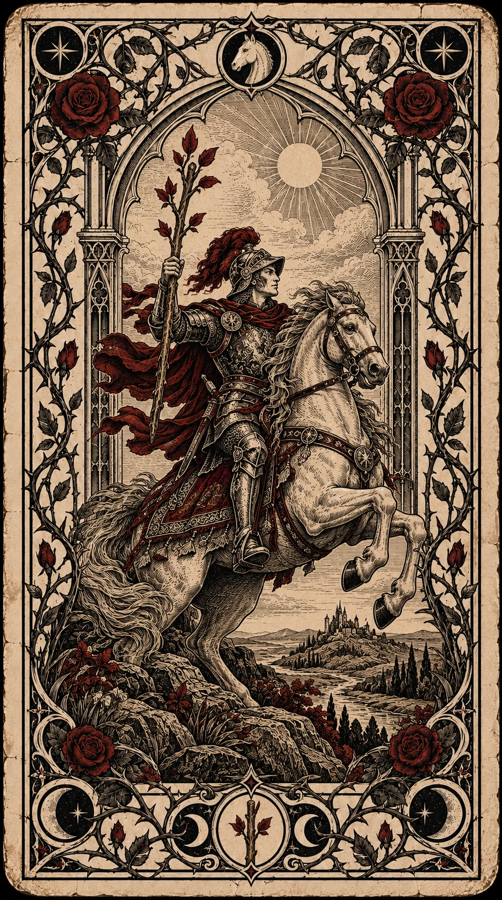
Knight of Wands
อัศวินไม้เท้า
wands-knightตั้งตรง: พลังของการลงมือทันที เต็มไฟและกล้าลุย ทำให้เรื่องต่าง ๆ เคลื่อนเร็วขึ้น
กลับหัว: คุณอาจหุนหันพุ่งไปก่อนคิด หรือไฟแรงแล้วดับเพราะไม่สม่ำเสมอ ลองวางจังหวะให้พลังนี้ไปได้ไกล
ชะลอสักนิด วางจังหวะให้ดีก่อนจะพุ่งไป
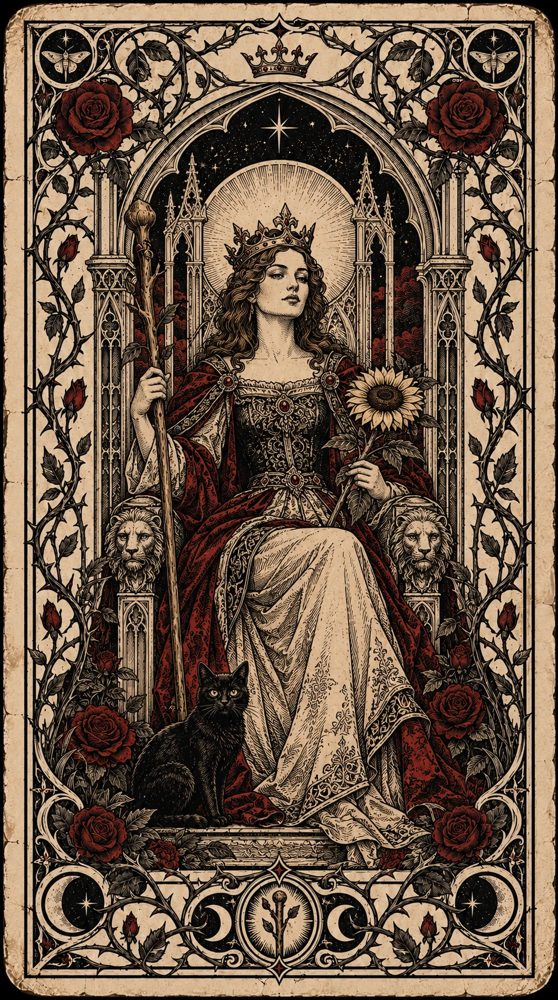
Queen of Wands
ราชินีไม้เท้า
wands-queenตั้งตรง: ความมั่นใจและเสน่ห์ที่อบอุ่น ช่วยให้คนรอบข้างกล้าเป็นตัวเอง
กลับหัว: ความมั่นใจอาจสั่นคลอน หรือกลายเป็นการหวงพื้นที่ของตัวเอง ลองกลับไปหาสิ่งที่ทำให้คุณภูมิใจในตัวเอง
ใช้ความมั่นใจของคุณไปช่วยให้คนอื่นกล้าขึ้นด้วย
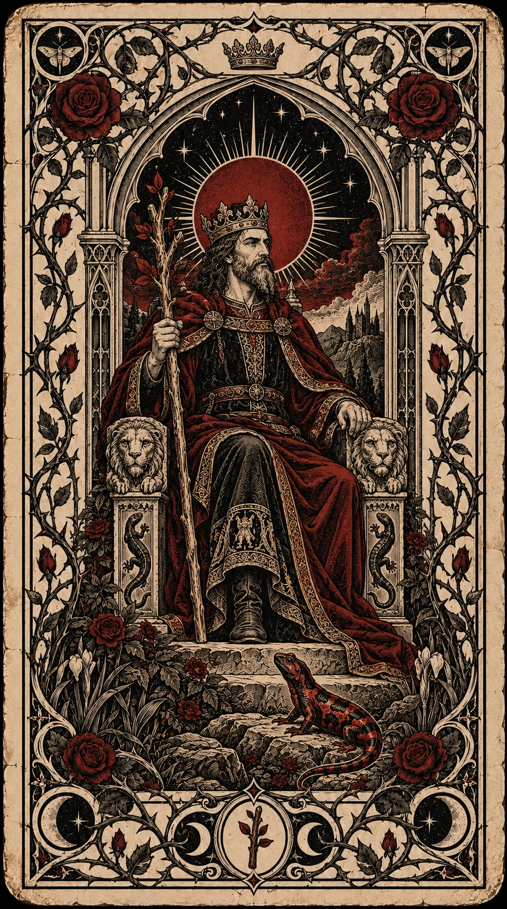
King of Wands
ราชาไม้เท้า
wands-kingตั้งตรง: ผู้นำที่มีวิสัยทัศน์และกล้าตัดสินใจ มองเห็นภาพใหญ่แล้วพาคนอื่นเดินไปด้วย
กลับหัว: คุณอาจใช้อำนาจเกินจำเป็น หรือใจร้อนจนไม่ฟังใคร ลองชะลอและให้คนอื่นมีเสียงบ้าง
แตกภาพใหญ่ที่คุณเห็นออกเป็นขั้นตอนที่คนอื่นทำตามได้
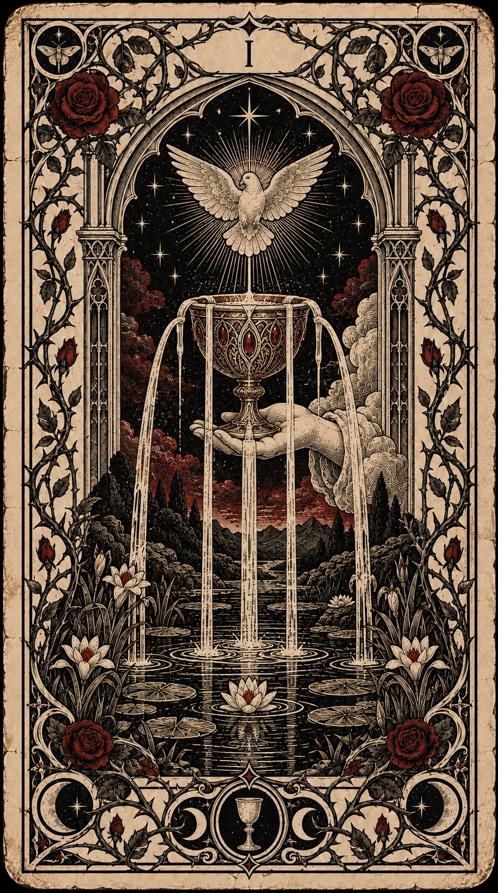
Ace of Cups
หนึ่งถ้วย
cups-aceตั้งตรง: น้ำใสล้นออกมาจากถ้วย เป็นสัญญาณของการเปิดใจรับความรู้สึกใหม่ ทั้งความรัก ความเมตตา หรือความสร้างสรรค์ที่กำลังไหลเข้ามา
กลับหัว: ใจอาจปิดหรืออารมณ์ล้นจนจัดการไม่ถูก ลองให้เวลากับความรู้สึกก่อนตัดสินใจอะไร
ใส่ใจความรู้สึกของตัวเองก่อนตัดสินใจอะไร
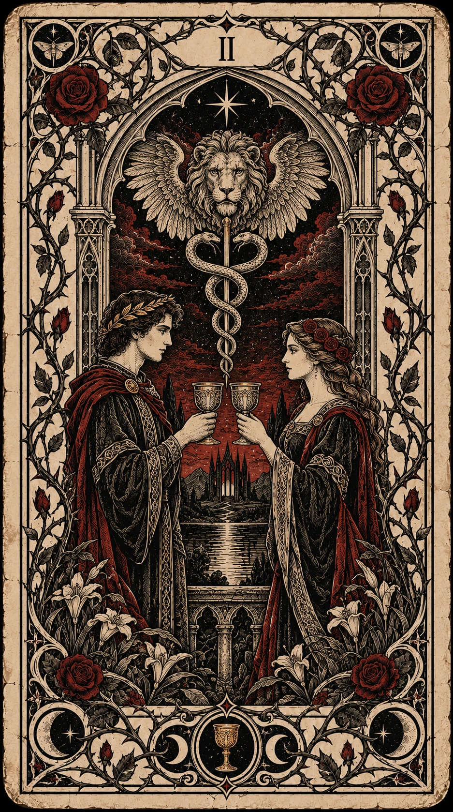
Two of Cups
สองถ้วย
cups-twoตั้งตรง: สองคนยื่นถ้วยให้กันและกัน เป็นการตอบรับที่สมดุล ความผูกพันเกิดจากการมองเห็นกันอย่างเท่าเทียม
กลับหัว: การให้และรับอาจไม่เท่ากัน หรือเข้าใจกันคลาดเคลื่อน ลองกลับไปคุยกันว่าแต่ละฝ่ายต้องการอะไรจริง ๆ
ลองคุยกันว่าแต่ละฝ่ายให้อะไร และอยากได้อะไรกลับมา
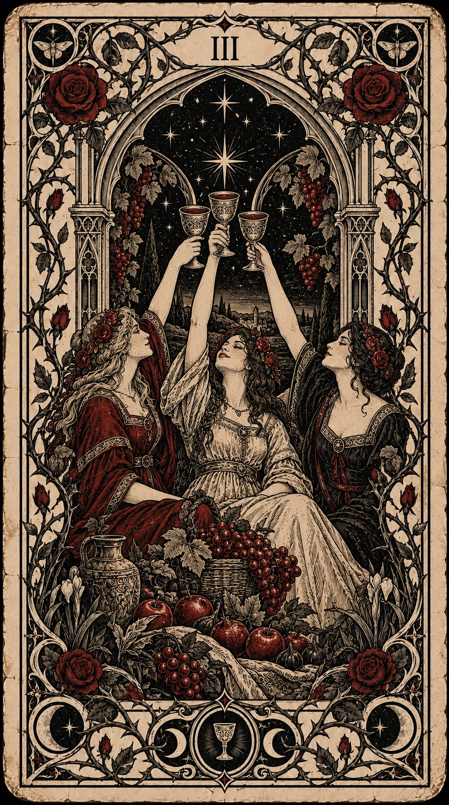
Three of Cups
สามถ้วย
cups-threeตั้งตรง: ชูถ้วยฉลองร่วมกัน เป็นพลังของมิตรภาพ เครือข่ายคนที่คอยเกื้อหนุน และช่วงเวลาที่ได้ยินดีไปด้วยกัน
กลับหัว: อาจรู้สึกถูกกันออกจากกลุ่ม หรือกลุ่มกดดันมากเกินไป ลองถอยมาเลือกอยู่กับคนที่ทำให้สบายใจจริง ๆ
แบ่งปันความสุขกับคนที่คุณไว้ใจ
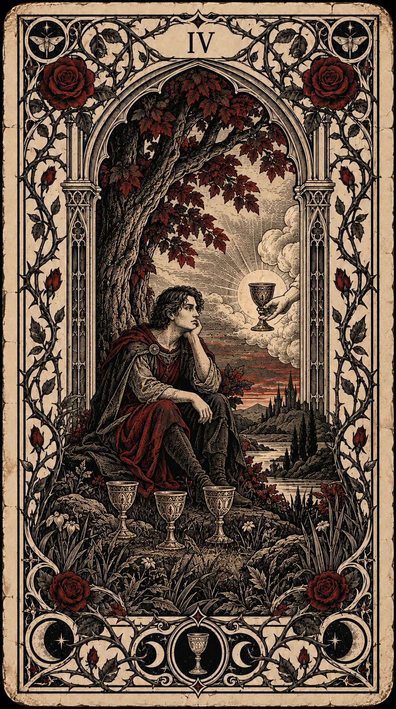
Four of Cups
สี่ถ้วย
cups-fourตั้งตรง: มีของดี ๆ อยู่ตรงหน้า แต่ใจกลับเฉยและไม่พอใจ เป็นช่วงที่ควรทบทวนความรู้สึกเงียบ ๆ ว่าตัวเองต้องการอะไรจริง ๆ
กลับหัว: คุณอาจเริ่มเห็นโอกาสที่เคยมองข้าม หรือในทางกลับกัน ยังไม่อยากเปิดรับอะไรใหม่ ลองมองให้กว้างขึ้น
ลองมองรอบตัวอีกรอบ อาจมีโอกาสที่คุณมองข้ามไป
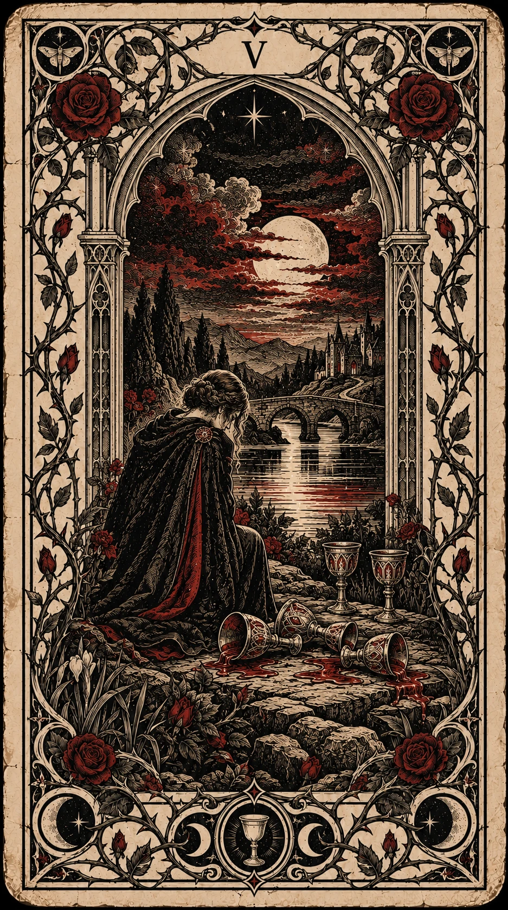
Five of Cups
ห้าถ้วย
cups-fiveตั้งตรง: บางอย่างหลุดมือไปแล้ว และคุณกำลังจมอยู่กับความเสียใจ ซึ่งควรได้รับการยอมรับ แต่ยังมีบางอย่างเหลืออยู่ข้างหลังที่คุณยังไม่ได้หันไปมอง
กลับหัว: คุณอาจเริ่มหันกลับมามองสิ่งที่ยังเหลืออยู่ หรืออาจยังติดอยู่กับความเศร้ามากเกินไป ค่อย ๆ ให้ตัวเองเดินต่อ
ขอให้คนที่ยังอยู่ข้างคุณช่วยเป็นกำลังใจ
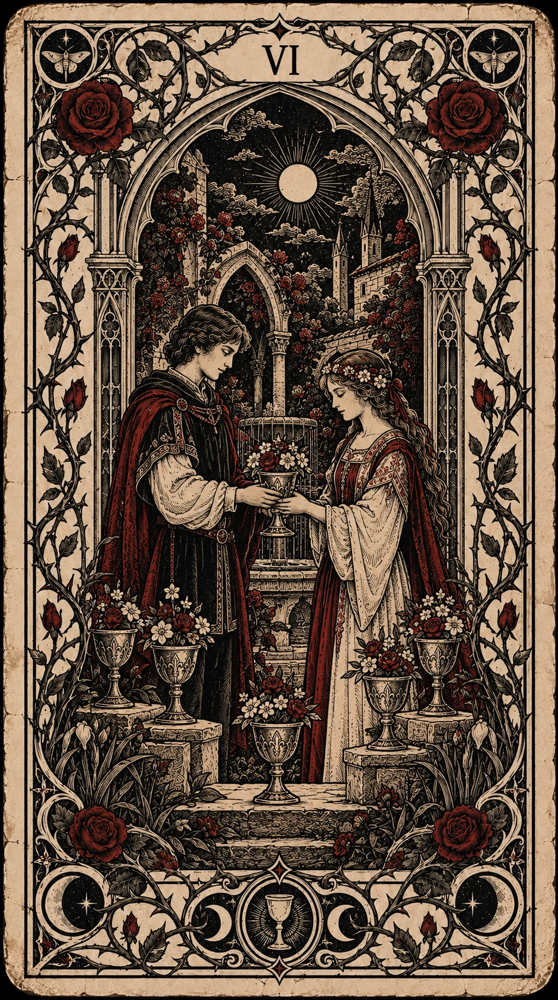
Six of Cups
หกถ้วย
cups-sixตั้งตรง: ความทรงจำอบอุ่นและความอ่อนโยนจากวันวานกำลังกลับมา มันช่วยเติมใจคุณได้ ถ้าไม่ยึดมันไว้มากเกินไป
กลับหัว: ยึดอดีตจนมองข้ามปัจจุบัน หรืออาจถึงเวลาเรียนรู้จากอดีตแล้วเดินต่อ ความทรงจำควรเป็นแรงใจ ไม่ใช่ที่หลบ
เอาความอบอุ่นจากวันเก่ามาใช้กับวันนี้
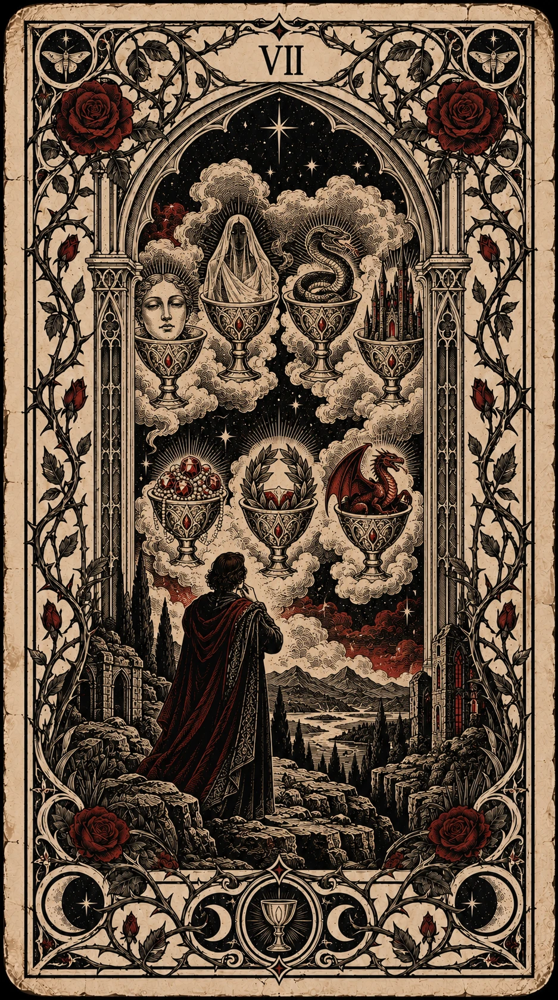
Seven of Cups
เจ็ดถ้วย
cups-sevenตั้งตรง: ตัวเลือกและจินตนาการมีมากจนแยกของจริงจากภาพลวงตาได้ยาก ความฝันหลายแบบกำลังดึงใจคุณพร้อมกัน
กลับหัว: คุณอาจเริ่มเลือกได้ชัดขึ้น หรือยังสับสนเพราะหวังมากเกินไป ลองใช้เกณฑ์ที่ตรวจสอบได้ช่วยตัดสิน
ตั้งเกณฑ์ไว้สองสามข้อ แล้วตัดตัวเลือกที่ไม่ผ่านทิ้งไป
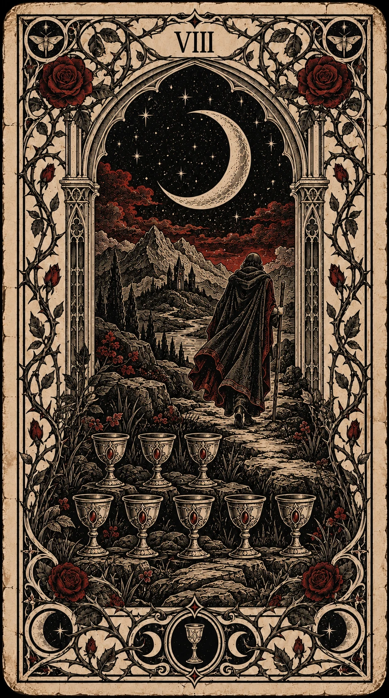
Eight of Cups
แปดถ้วย
cups-eightตั้งตรง: คุณกำลังเดินออกจากสิ่งที่ดูเรียบร้อยแต่ไม่เติมเต็มอีกต่อไป เพื่อไปค้นหาสิ่งที่มีความหมายกว่า
กลับหัว: กลัวการจากไป หรือวนกลับมาที่เดิม ลองถามตัวเองว่าสิ่งที่ลังเลอยู่คือความผูกพันจริง หรือแค่ความเคยชิน
เลือกการเติบโต แล้วยอมรับว่าต้องเสียบางอย่างไป
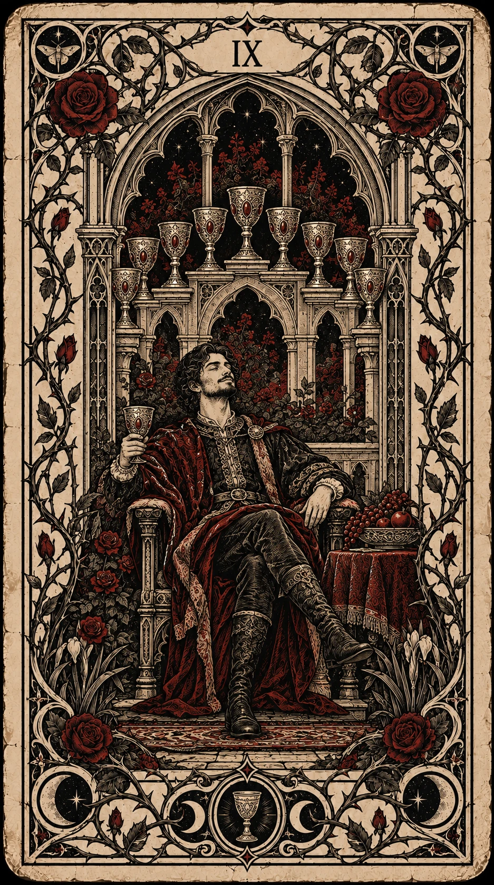
Nine of Cups
เก้าถ้วย
cups-nineตั้งตรง: คุณพึงพอใจกับสิ่งที่มีอยู่ และมีความสุขที่เห็นคุณค่าของสิ่งที่ลงมือทำมา
กลับหัว: อาจกำลังหาความอิ่มเอมจากภายนอก หรือสมหวังแล้วแต่ยังรู้สึกว่าขาด ลองกลับมาถามว่าคำว่า "พอ" ของคุณคืออะไร
ลองนิยามดูว่า "พอ" ของคุณคือแค่ไหน
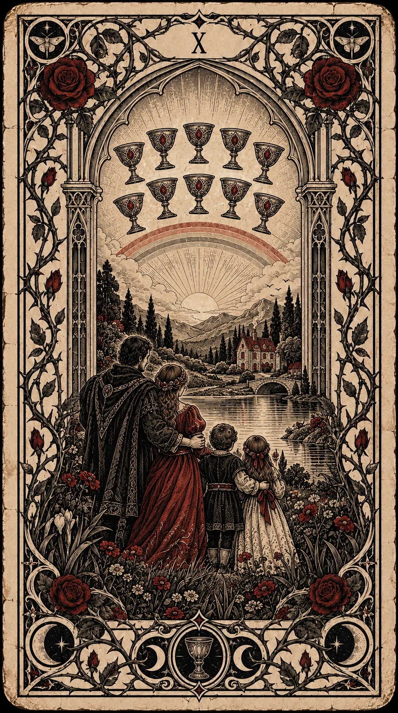
Ten of Cups
สิบถ้วย
cups-tenตั้งตรง: ความสุขที่ทุกคนช่วยกันสร้าง ใจที่รู้สึกกลมกลืน และความผูกพันที่อบอุ่นกับคนใกล้ชิด
กลับหัว: ภาพฝันกับความจริงอาจไม่ตรงกัน หรือสมาชิกบางคนยังห่างกัน ลองเชื่อมกันด้วยการใส่ใจเรื่องเล็ก ๆ ในวันธรรมดา
ดูแลความผูกพันผ่านเรื่องเล็ก ๆ ในแต่ละวัน
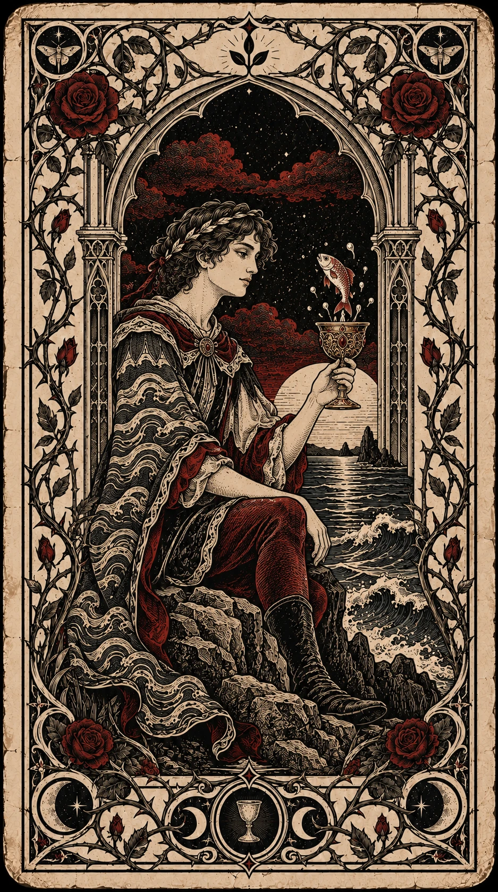
Page of Cups
มหาดเล็กถ้วย
cups-pageตั้งตรง: มีความอ่อนโยน ความประหลาดใจ หรือข่าวดีเรื่องความรู้สึกเข้ามาโดยไม่คาดคิด ลองเปิดใจรับมันอย่างอ่อนโยน
กลับหัว: อารมณ์อาจแกว่ง หรือคุณกลัวแสดงความรู้สึกออกไป ลองเริ่มจากพูดเรื่องเล็ก ๆ ก่อนจะบอกทั้งหมด
ลองฟังความรู้สึกประหลาดใจเล็ก ๆ ที่โผล่ขึ้นมาในใจ
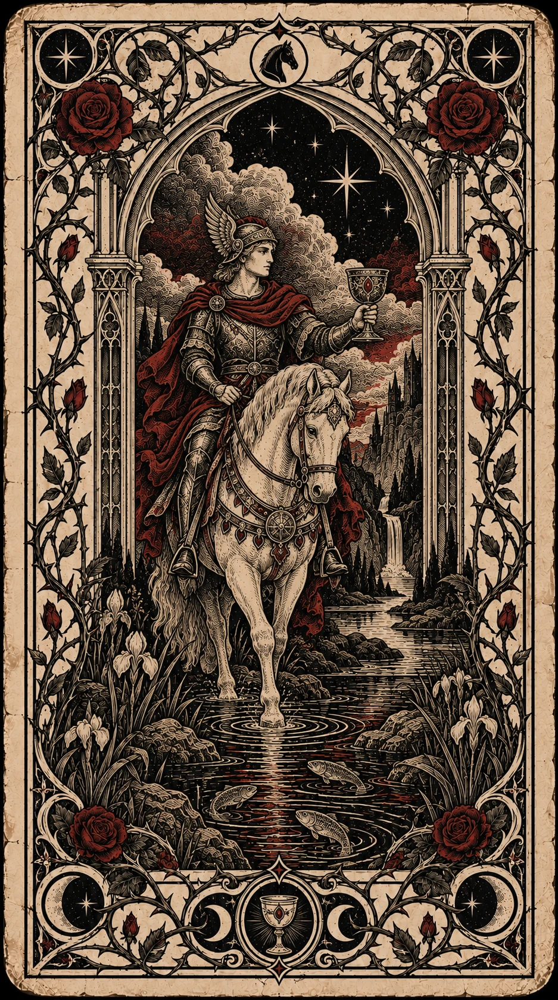
Knight of Cups
อัศวินถ้วย
cups-knightตั้งตรง: มีคำเชิญชวนหรือข้อเสนอที่ชวนให้เดินตามหัวใจ เป็นความโรแมนติกที่มาอย่างสุภาพและอ่อนโยน
กลับหัว: คุณอาจฝันเกินความจริง หรือสัญญาด้วยคำหวานแต่ไม่ลงมือ ลองเทียบคำพูดกับการกระทำ
บอกความรู้สึกของคุณออกไปตรง ๆ แล้วเตรียมใจรับคำตอบ ไม่ว่าจะเป็นแบบไหน
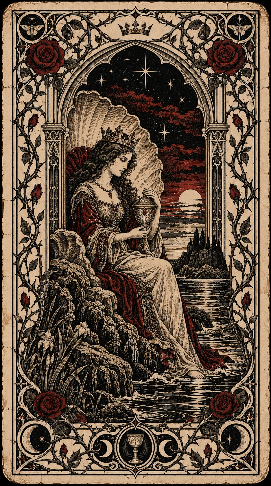
Queen of Cups
ราชินีถ้วย
cups-queenตั้งตรง: ความเข้าอกเข้าใจและสัญชาตญาณที่ละเอียดอ่อน คุณดูแลใจคนอื่นได้ด้วยการรับฟังจริง ๆ
กลับหัว: รับอารมณ์ของคนอื่นเข้ามาจนล้นและลืมความรู้สึกของตัวเอง ลองแยกว่าอันไหนเป็นของคุณ อันไหนเป็นของเขา
ลองแยกให้ออกว่าความรู้สึกไหนเป็นของคุณ และไหนเป็นของคนอื่น
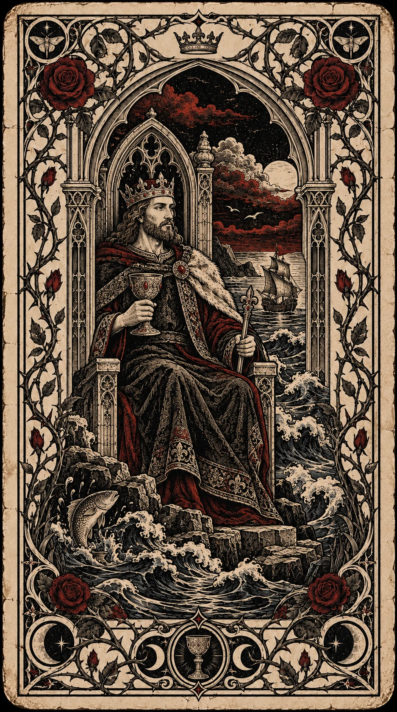
King of Cups
ราชาถ้วย
cups-kingตั้งตรง: คุณรับรู้ความรู้สึกได้โดยไม่ถูกมันพัดพาไป เป็นความเมตตาที่มีหลักยึด
กลับหัว: คุณอาจเก็บอารมณ์ไว้จนระเบิด หรือใช้ความรู้สึกควบคุมคนอื่น ลองพูดสิ่งที่อยู่ในใจอย่างสงบ
รับรู้อารมณ์ของตัวเอง แต่อย่าให้มันเป็นคนกำหนดทุกอย่าง
Ace of Swords
หนึ่งดาบ
swords-aceตั้งตรง: ความจริงและความชัดเจนตัดผ่านความสับสน ทำให้คุณเห็นทางตัดสินใจ
กลับหัว: ความคิดอาจพร่ามัว หรือคำพูดกลายเป็นอาวุธทำร้ายคน ตรวจข้อเท็จจริงก่อนฟันธง
เช็กข้อมูลให้ครบก่อนฟันธง
Two of Swords
สองดาบ
swords-twoตั้งตรง: คุณตั้งการ์ดป้องกันเพราะทางเลือกยาก และยังไม่อยากรับข้อมูลที่อาจทำให้ต้องเลือก เป็นภาวะนิ่งค้างที่มาจากความกลัวตัดสินผิด
กลับหัว: ข้อมูลเริ่มปรากฏ และเลี่ยงการตัดสินใจไม่ได้อีกต่อไป ลองเลิกหลับตา แล้วดูข้อมูลให้ครบ
ลองเขียนว่าต้องรู้อะไรบ้างถึงจะตัดสินใจได้
Three of Swords
สามดาบ
swords-threeตั้งตรง: คุณกำลังเจ็บจากความจริงที่ไม่อยากรับ แต่การยอมรับมันคือจุดเริ่มของการเยียวยา
กลับหัว: คุณอาจเริ่มเยียวยาจากบาดแผล หรือยังเก็บความเจ็บไว้ไม่พูดถึง ให้เวลาและพื้นที่แก่ตัวเอง
ลองเรียกชื่อความเจ็บของคุณออกมา แล้วหาคนที่พึ่งพาได้
Four of Swords
สี่ดาบ
swords-fourตั้งตรง: ช่วงพักเพื่อฟื้นแรงกายและใจ ก่อนกลับไปเผชิญเรื่องต่อไป การหยุดอย่างตั้งใจไม่ใช่การยอมแพ้
กลับหัว: คุณอาจพักไม่พอแล้วรีบกลับมาวิ่ง หรือพักนานเกินจนหลุดจังหวะ ลองประเมินว่าตัวเองพร้อมแค่ไหน
พักให้เต็มที่ ไม่ต้องรู้สึกผิด
Five of Swords
ห้าดาบ
swords-fiveตั้งตรง: ชัยชนะที่ต้องแลกด้วยบางอย่าง คุณอาจชนะการโต้แย้ง แต่เสียความสัมพันธ์ไปพร้อมกัน
กลับหัว: คุณอาจเริ่มคืนดี หรือยังค้างความขุ่นเคืองอยู่ ลองถามว่าการแพ้ชนะยังสำคัญกว่าการเข้าใจกันไหม
ถามตัวเองว่าชนะครั้งนี้คุ้มกับที่เสียไปหรือเปล่า
Six of Swords
หกดาบ
swords-sixตั้งตรง: ค่อย ๆ เคลื่อนผ่านช่วงยากไปสู่ช่วงที่สงบกว่า เหมือนเรือที่พาข้ามน้ำนิ่งไปอีกฝั่ง ไม่ต้องรีบ
กลับหัว: คุณอาจพาปัญหาเดิมติดตัวไปด้วย หรือติดอยู่ระหว่างทางไม่ขยับ ลองตรวจดูว่ามีอะไรที่ยังวางไว้ไม่ได้ที่ฝั่งเดิม
ระหว่างช่วงเปลี่ยนผ่าน อย่าลังเลที่จะขอความช่วยเหลือ
Seven of Swords
เจ็ดดาบ
swords-sevenตั้งตรง: กลยุทธ์ที่ใช้ความเงียบ หรือการทำเรื่องบางอย่างคนเดียวโดยไม่บอกใคร อาจฉลาด แต่ต้องดูว่าซื่อตรงพอหรือไม่
กลับหัว: ความลับอาจถูกเปิดเผย หรือถึงเวลาที่ควรสารภาพ ลองรับผิดชอบก่อนที่จะมีใครมาถาม
ลองเช็กว่าแผนนี้ซื่อตรงพอที่คุณจะภูมิใจไหม
Eight of Swords
แปดดาบ
swords-eightตั้งตรง: คุณรู้สึกติดกับดัก เพราะความเชื่อที่จำกัดตัวเอง ทั้งที่ทางออกอาจเปิดอยู่มากกว่าที่คิด
กลับหัว: คุณเริ่มเห็นทางออกและเอาอำนาจกลับมาไว้ที่ตัวเอง ก้าวเล็ก ๆ ก็เป็นการหนีออกจากกรงได้
ลองหาทางเลือกเล็ก ๆ ที่ยังเหลืออยู่ แม้จะเล็กน้อยก็ตาม
Nine of Swords
เก้าดาบ
swords-nineตั้งตรง: ความกังวลวนอยู่ในหัวตอนกลางคืน ซึ่งมักดูใหญ่กว่าสิ่งที่เกิดขึ้นจริงในตอนกลางวัน
กลับหัว: คุณเริ่มขอความช่วยเหลือและเห็นความคิดชัดขึ้น การพูดสิ่งที่กังวลออกมาเป็นก้าวสำคัญ
เขียนสิ่งที่กังวลลงกระดาษ แล้วขีดเส้นใต้เรื่องที่คุณลงมือได้
Ten of Swords
สิบดาบ
swords-tenตั้งตรง: นี่คือจุดต่ำสุดที่วงจรเจ็บปวดจบลง แม้จะหนัก แต่หลังจากนี้ทางจะค่อย ๆ ดีขึ้น
กลับหัว: เริ่มฟื้นหลังเรื่องหนักจบลง หรือยังกลัวปล่อยวางสิ่งที่ผ่านไปแล้ว ลองให้ตัวเองได้พักและเริ่มใหม่
หยุดทำสิ่งที่เกินกำลังคุณมานานเสียที
Page of Swords
มหาดเล็กดาบ
swords-pageตั้งตรง: ช่วงที่ควรตั้งคำถาม สังเกต และเรียนรู้ข่าวสารด้วยหัวที่ตื่นตัว
กลับหัว: คุณอาจระแวงเกินไป เชื่อข่าวลือ หรือพูดโดยไม่คิด ตรวจแหล่งข้อมูลก่อนเชื่อหรือส่งต่อ
เช็กแหล่งข่าวก่อนเชื่อ และฟังให้จบก่อนตอบ
Knight of Swords
อัศวินดาบ
swords-knightตั้งตรง: ความคิดของคุณตรงประเด็นและเด็ดขาด เหมาะกับการลงมือเร็วเมื่อเห็นเป้าชัด
กลับหัว: คุณอาจหุนหันจนพูดแรงเกินไป หรือเถียงโดยไม่ฟัง ลองชะลอสักจังหวะก่อนตอบ
เช็กทิศทางให้แน่ก่อนเร่ง
Queen of Swords
ราชินีดาบ
swords-queenตั้งตรง: พูดตรง คิดชัด และมีขอบเขตของตัวเอง โดยไม่เสียความเมตตาต่อคนอื่น
กลับหัว: คุณอาจเย็นชา หรือวิจารณ์แรงจนทำให้คนถอย ลองผสมความจริงเข้ากับความอ่อนโยน
พูดความจริงได้ โดยยังเมตตาไปพร้อมกัน
King of Swords
ราชาดาบ
swords-kingตั้งตรง: ผู้ที่ใช้สติปัญญานำ ด้วยเหตุผล มาตรฐาน และการตัดสินที่เที่ยงตรง
กลับหัว: คุณอาจแข็งทื่อ หรือใช้เหตุผลกดคนอื่น ลองฟังว่าความรู้สึกของเขามีน้ำหนักตรงไหน
ตั้งเกณฑ์ที่ใช้กับทุกคนเท่ากัน รวมถึงตัวคุณเอง
Ace of Pentacles
หนึ่งเหรียญ
pentacles-aceตั้งตรง: โอกาสที่จับต้องได้จริงมาถึงแล้ว เป็นจุดเริ่มของฐานที่มั่นคงสำหรับสิ่งที่คุณตั้งใจสร้าง
กลับหัว: โอกาสอาจหลุดมือ หรือแผนยังไม่พร้อม ลองตรวจทรัพยากรที่มีจริงก่อนรับปาก
เตรียมสิ่งที่จำเป็นให้พอสำหรับก้าวแรก แล้วเริ่มเลย
Two of Pentacles
สองเหรียญ
pentacles-twoตั้งตรง: คุณกำลังปรับสมดุลระหว่างหลายภาระได้อย่างคล่องตัว เหมือนโยนของสองชิ้นให้ลอยไปตามจังหวะคลื่น
กลับหัว: คุณอาจเสียสมดุล หรือรับงานมากเกินกว่าจะประคองไหว ลองวางบางอย่างลงก่อนที่มันจะหล่นเอง
เลือกเรื่องสำคัญที่สุดก่อน
Three of Pentacles
สามเหรียญ
pentacles-threeตั้งตรง: งานที่ทุกคนร่วมมือกัน ใช้ฝีมือและเรียนรู้ไปด้วยกัน เหมือนช่างฝีมือ ผู้ออกแบบ และผู้ว่าจ้างที่ทำงานเข้ากัน
กลับหัว: บทบาทอาจไม่ชัด หรือทีมขาดการประสานกัน ผลงานจึงไม่ลงตัว ลองกลับมาตกลงมาตรฐานร่วมกัน
ตกลงให้ชัดว่าใครทำอะไร และงานที่ดีหน้าตาเป็นอย่างไร
Four of Pentacles
สี่เหรียญ
pentacles-fourตั้งตรง: การรักษาทรัพยากรและความมั่นคงไว้เป็นเรื่องดีเมื่อทำอย่างพอดี แต่ถ้ากอดไว้แน่นเกินไป ก็อาจกลายเป็นกำแพง
กลับหัว: คุณอาจเริ่มคลายมือ หรือกลัวสูญเสียจนยึดแน่นขึ้นไปอีก ลองถามว่าสิ่งที่ปกป้องอยู่คุ้มกับความอึดอัดที่ต้องแลกไหม
แยกให้ออกระหว่างความมั่นคง กับการยึดไว้ไม่ปล่อย
Five of Pentacles
ห้าเหรียญ
pentacles-fiveตั้งตรง: คุณกำลังขาดแคลนและรู้สึกถูกทิ้ง ทั้งที่ประตูแห่งความช่วยเหลือยังเปิดอยู่ใกล้ ๆ
กลับหัว: คุณอาจเริ่มยอมรับความช่วยเหลือ หรือยังอายจนไม่กล้าขอ ลองเคาะประตูที่ใกล้ที่สุดดู
มองหาประตูที่ยังเปิดอยู่ แล้วลองเคาะดู
Six of Pentacles
หกเหรียญ
pentacles-sixตั้งตรง: การให้และรับอย่างเป็นธรรม ที่ทั้งผู้ให้และผู้รับยังรักษาศักดิ์ศรีไว้ได้
กลับหัว: อาจเป็นการให้เพื่อควบคุม หรือรับแล้วรู้สึกเป็นหนี้ ลองตรวจดูว่าการให้นี้ไม่ได้ผูกมัดจนเสียสมดุล
ให้เท่าที่ไหว และรับได้อย่างมีศักดิ์ศรี
Seven of Pentacles
เจ็ดเหรียญ
pentacles-sevenตั้งตรง: หยุดมองสิ่งที่ปลูกไว้ ช่วงนี้คือการรอผลและประเมินว่าความพยายามระยะยาวไปได้ถึงไหนแล้ว
กลับหัว: คุณอาจท้อกับผลที่มาช้า หรือใช้แรงผิดที่ ลองถอยมาดูว่าสวนนี้ยังควรรดน้ำต่อ หรือควรย้ายไปปลูกที่อื่น
ดูผลที่ได้ แล้วปรับวิธีทำถ้าจำเป็น
Eight of Pentacles
แปดเหรียญ
pentacles-eightตั้งตรง: ช่วงของการฝึกฝนอย่างต่อเนื่องและตั้งใจ เพื่อให้ดีขึ้นทีละนิด
กลับหัว: คุณอาจทำซ้ำโดยไม่มีทิศทาง หรือยึดความสมบูรณ์แบบจนไม่ปล่อยงานออกไป ลองกำหนดว่าอะไรคือ "ดีพอ"
เลือกฝึกส่วนที่ยังอ่อนอยู่โดยเฉพาะ
Nine of Pentacles
เก้าเหรียญ
pentacles-nineตั้งตรง: คุณประสบความสำเร็จด้วยตัวเอง และพอใจกับสิ่งที่สร้างมา
กลับหัว: ดูเหมือนสำเร็จแต่ยังไม่มั่นคง หรือแยกตัวมากเกินไป ลองเปิดพื้นที่ให้ใครบางคนเข้ามามีส่วนร่วม
ลองมองสิ่งที่คุณสร้างมาด้วยตัวเอง แล้วให้คุณค่ากับมัน
Ten of Pentacles
สิบเหรียญ
pentacles-tenตั้งตรง: นี่คือฐานระยะยาวที่ส่งต่อกันได้ ทั้งทรัพย์สิน มรดก และสายสัมพันธ์ เป็นความมั่นคงที่ยืนยาวกว่าชีวิตของคนคนเดียว
กลับหัว: ภาระของครอบครัว หรือรากฐานที่เริ่มสั่นคลอน ลองคุยเรื่องเงินและความรับผิดชอบกันตรง ๆ
วางแผนให้พอสำหรับคนหลายรุ่นที่ต้องพึ่งกัน
Page of Pentacles
มหาดเล็กเหรียญ
pentacles-pageตั้งตรง: ความตั้งใจเรียนรู้และเริ่มแผนอย่างจริงจังทีละขั้น โดยไม่รีบ
กลับหัว: คุณอาจผัดวันหรือขาดการฝึก ความตั้งใจยังอยู่ แต่ยังไม่เปลี่ยนเป็นการกระทำ ลองกำหนดงานเล็ก ๆ ทำเป็นรายวัน
เริ่มเรียนทักษะหนึ่งอย่างที่ใช้ต่อยอดได้
Knight of Pentacles
อัศวินเหรียญ
pentacles-knightตั้งตรง: ความรับผิดชอบ ความสม่ำเสมอ และความอดทนที่ทำให้งานเสร็จ แม้จะช้าแต่แน่น
กลับหัว: คุณอาจชะงัก ดื้อกับวิธีเดิม หรือปล่อยให้งานกลบชีวิตส่วนอื่น ลองปรับแผนให้ยืดหยุ่นขึ้น
ทำตามแผนต่อไป แต่เช็กด้วยว่ามันยังเหมาะอยู่หรือเปล่า
Queen of Pentacles
ราชินีเหรียญ
pentacles-queenตั้งตรง: การดูแลที่เป็นรูปธรรม และความอบอุ่นที่ทำให้บ้านและชีวิตประจำวันน่าอยู่
กลับหัว: คุณอาจดูแลคนอื่นจนล้า หรือกังวลเรื่องทรัพยากรจนลืมตัวเอง ลองดูแลตัวเองแบบเดียวกับที่ดูแลคนอื่น
จัดสิ่งรอบตัวให้ชีวิตประจำวันของคุณสบายขึ้น
King of Pentacles
ราชาเหรียญ
pentacles-kingตั้งตรง: คุณบริหารทรัพยากรได้อย่างชำนาญ ความสำเร็จของคุณมั่นคงและแบ่งปันให้คนอื่นได้
กลับหัว: คุณอาจยึดติดกับวัตถุ หรือใช้เงินควบคุมคนอื่น ลองถามตัวเองว่าความมั่งคั่งที่มีอยู่รับใช้อะไรอยู่
ใช้ทรัพยากรที่มีอย่างรับผิดชอบ โดยมองไปไกล ๆ